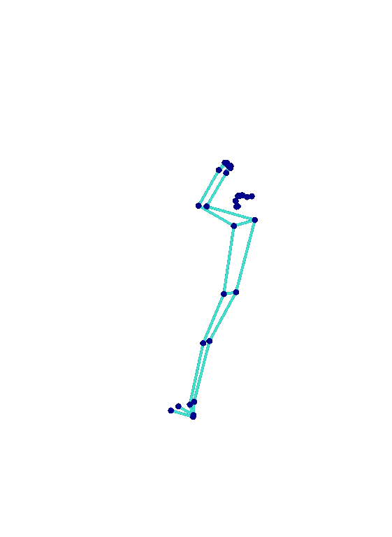
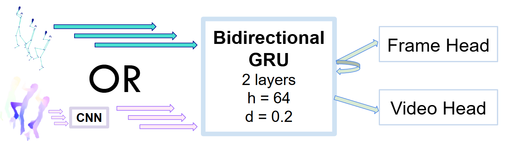
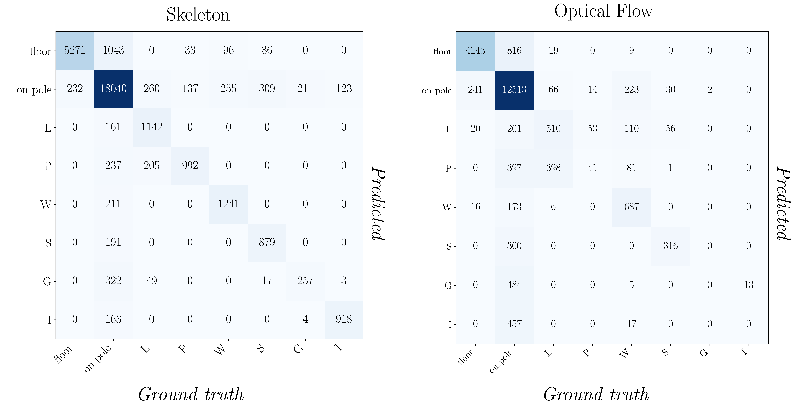
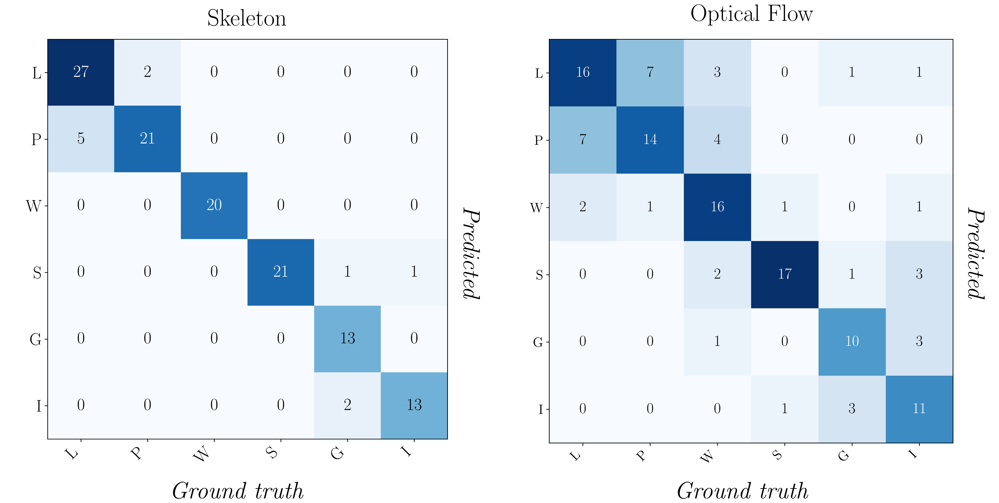

Computer vision for sports lacks datasets and models that target pole sports, an activity marked by self-occlusion, body inversions, and sustained contact with the pole. We address this gap by introducing Pole-Arina, a curated, privacy-preserving dataset for markerless analysis of static pole tricks.
The collection comprises 836 videos from 58 participants and provides two appearance-suppressing modalities derived from the recordings: pose skeleton sequences (2D joints) and dense optical flow. We annotate each clip with both per-video trick labels and per-frame labels that capture temporal structure, enabling evaluation of clip-level and frame-wise recognition under privacy constraints.
As reference baselines, we benchmark lightweight temporal models across all benchmark settings and analyze common confusions and imbalance effects. In addition, we provide a geometry-aware analysis module that measures trick-specific body orientation, joint alignments, and proximities to produce interpretable overlays and actionable feedback.
Pole-Arina collects static pole trick videos and releases privacy-preserving representations for analysis. Instead of relying on identifiable RGB frames, the dataset supports two motion-focused views: 2D pose skeletons and dense optical flow.
Skeleton sequences encode body configuration over time with 2D joints, making the trick structure visible while suppressing appearance details.

Optical flow captures dense motion patterns between frames, highlighting the direction and intensity of movement without preserving raw video appearance.
The benchmark evaluates lightweight temporal models for both frame-wise understanding and clip-level recognition. These settings test whether privacy-preserving motion features are sufficient for recognizing pole trick structure.

Per-frame models predict temporal labels at each point in a clip, supporting fine-grained phase analysis and coaching-oriented feedback.

Per-video models assign one trick label to the full clip by aggregating evidence across the complete motion sequence.

@inproceedings{polearina2026,
title = {Pole-Arina: A Privacy-Preserving Dataset and Benchmark for Static Pole Tricks},
author = {Diana Marin and Katharina Scheucher and Peter Kán},
booktitle = {Proceedings of the IEEE/CVF Conference on Computer Vision and Pattern Recognition (CVPR) Workshops},
month = {June},
year = {2026},
}